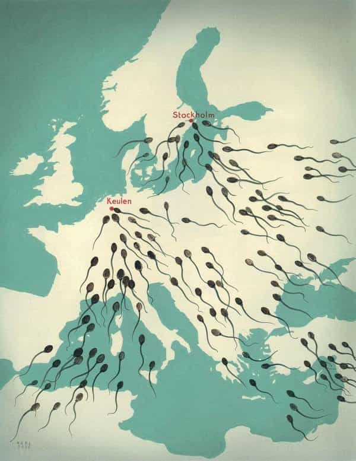

A video posted on 7/28/2017 provides a long-overdue explanation of Patreon’s banning policies. In the beginning, Jack Conte says:
A lot of people are just going to try to find holes in our logic.
Challenge accepted!
Patreon CEO on Content Policy, Lauren Southern, and IGD
He explains why Patreon shut down the accounts of Defend Europe, Lauren Southern, and IDG (It’s Going Down). He says all this was nonpolitical, based entirely on “manifest observable behavior”. He repeats this phrase often, sometimes flashing the words onscreen to drive home the point. He explains:
We’re talking about removing a person’s income. The authority to take away a human being’s income is a sobering responsibility. It is not something to be done on a whim.
No arguments here so far. Many people receive much of their income from online sales and donations, which need platforms (such as Patreon) to receive payments. Although my day job involves remodeling in partnership with one of my steady girlfriends, I certainly can relate to being subject to the whims of some corporation or other entity. Further, this is how several organizations receive their funding, so ideological neutrality is important.
His explanation for why Defend Europe and Lauren Southern got banned
He explains that they blockaded a so-called “rescue boat”. Quoting Lauren:
So this is a boat called The Aquarius that has been illegally bringing in migrants from the Libyan ocean for the last while, and they’re just heading out again to bring in more illegal migrants and we’re going to stop them.
According to a US News & World Report article—which doesn’t seem to disapprove of illegal immigration—these ships pick up migrants off the coast of Libya. They’re in vessels considered unseaworthy (I suspect this involves being overloaded far beyond capacity) which are operated by human traffickers. Then:
Virtually all the migrants picked up by charities are brought to Italy instead of Libya, which is considered unsafe, and about half ask for asylum. Almost 200,000 asylum seekers are living in the country’s state-funded shelters.
I’m not an expert on maritime law, and I doubt Jack Conte is either. Be that as it may, a few facts stand out about this Camp of the Saints racket:
- Libya was good enough for the illegal aliens to come there in the first place, as the stepping-stone to countries with generous welfare benefits.
- Libya is a rough neighborhood, but Tunisia and Egypt—right next door—aren’t as bad.
- Even so, the best option is to send the illegal aliens back to their home countries.
- Illegal immigration is a crime, and those assisting it are accessories.
- The governments of Europe would stop this if they were working for their people. Apparently, they have other priorities.
- This is an invasion. Although an invasion is usually carried out by armed soldiers, this isn’t necessary because the Eurocrats don’t defend their countries, a government’s number one job.
Therefore, it’s disingenuous to portray Defend Europe and Lauren Southern as wrongdoers, rather than illegal aliens and their enablers.
The truth about the “refugees”

A boatload of scientists, engineers, and industrialists
Still trying to keep the high ground, the video shows the heartstring-tugging photo of Alan Kurdi, the Syrian kid washed ashore (obviously not wearing a flotation device). What most people aren’t asking about this unfortunate episode is what a little kid was doing on an inflatable dinghy packed to twice its rated capacity. Also, most people are unaware that prior to the ill-fated trip, he and his parents were actually living in Turkey, which is still one of the most prosperous and enlightened places in the Middle East. Still, the call to greener pastures yet was too tempting.
I’ll grant that Jack Conte is concerned with migrants in dangerous conditions at sea, risks that they’re voluntarily assuming. Still, where’s the concern about the crime and terrorism that these migrants are bringing with them? There’s a reason why any European with a brain (a category not including their governments) doesn’t want them there.

The migrants may be fleeing violent and dysfunctional places like sub-Saharan Africa, Iraq, Afghanistan, and Syria. (Actually, many “Syrian refugees” are from elsewhere, and very few are women and children, but all that’s another matter.) When they arrive upon Europe’s “magic dirt”, they don’t want to assimilate; instead, they bring violence and dysfunction with them.
All these “humanitarian NGOs” would do better trying their luck at helping fix those societies, rather than enable overrunning stable countries. Am I just being a big cynic, or could there be another agenda?
More banning

Freedom of speech is meaningless if it only covers “approved” viewpoints.
Less than a minute of the ten minute video concerns the leftist outfit IGD, which he explains was banned for doxxing and encouraging the sabotage of railroad tracks. Then this:
There are probably going to be a lot of people who say that we’re just taking down IGD’s page just to seem like we’re being politically unbiased and fair, so I want to cut that argument off right here.
Following that, he explains how their content review polices work. Okie dokie. Am I being a big cynic again, or could this have something to do with Patreon being called out for hypocrisy a month previously?
Finally, he states what he’ll fix. One item is implementing an appeals process, because:
…[E]very creator deserves fair treatment and a second chance. We commit to building a more fleshed-out warning system.
I seriously doubt that this will be extended retroactively to Defend Europe or Lauren Southern, but we’ll have to see about the IGD radicalinskis. I must credit Jack for good rhetorical skills, though; he’d do great as a lawyer or lobbyist.
What he doesn’t explain is why Patreon banned Occidental Dissent—did they hurt someone’s feelings with a Confederate flag or something? And how about Wife With A Purpose? The most controversial thing this Mormon homeschooling mom said was that White families should have more children—oh my golly! She later explained that she wasn’t completely being serious (though it sounds like a fine idea to me); still, is saying so a criminal activity?
For that matter, why did Paypal ban Roosh? Did they consider his Kratom-powered Rasputin beard a weapon of mass destruction?
Why free speech matters

The left used to champion free speech, especially in the 18th century when liberalism was still a good thing. Even as late as the 1960s, they were still talking a good game about it. Then when the leftist power structure achieved decisive cultural dominance, they reversed course—funny that.
The left is in utter panic over recent developments. They failed to elect Hillary, a major setback. Further, the public is starting to push back and challenge leftist narratives that we’ve been browbeaten with for decades. This is why we’re seeing the increasing trend of “de-platforming” dissident voices, as well as cutting off funding to them. Doing this to everyone even a millimeter to the right of William F. Buckley is the Current Year’s big fad.
Social media companies are censoring speech too. Even governments are colluding with them. Further, Germany can’t control “refugees” running wild, but they can arrest people for political opinions, just like the Stasi once did.
The left is so well-funded that they can pay outside agitators and bus them into remote cities to raise hell. (In fact, that’s a good argument for charging the globalists and their front groups under the RICO Act, but I’ll have to let greater legal minds ponder that one.) However, the rest of us rely on grassroots support.
I can see that Jack Conte wants to assure Patreon’s users that they’re going to be fair and respect free speech. Unfortunately for him, all this “no-platforming” by Patreon and others like them is backfiring. Their overreach and nauseating hypocrisy are causing alternate institutions, such as Counterfund, to emerge.
Governments banning dissenting speech are tyrannical, but an oligopoly of leftist companies doing the same aren’t much better. Banks and phone companies don’t micromanage their customers over ideology, and neither should payment processing and social media platforms. Finally, orthodox opinions can flourish even under censorship, but free speech is a vital necessity for dissident opinions. That’s why this is important.
Read More: Afro-Islamist Riots Sweep Through Vibrant Suburbs Of Paris